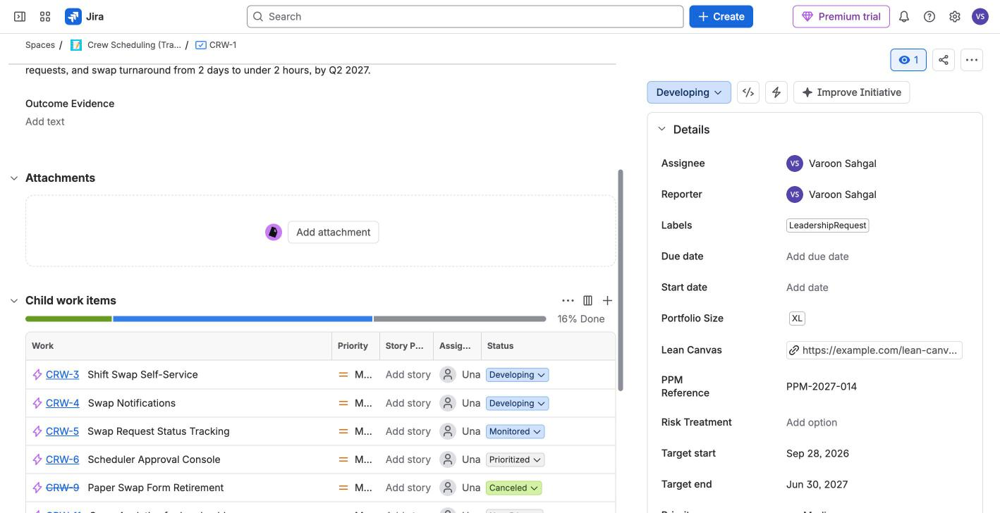
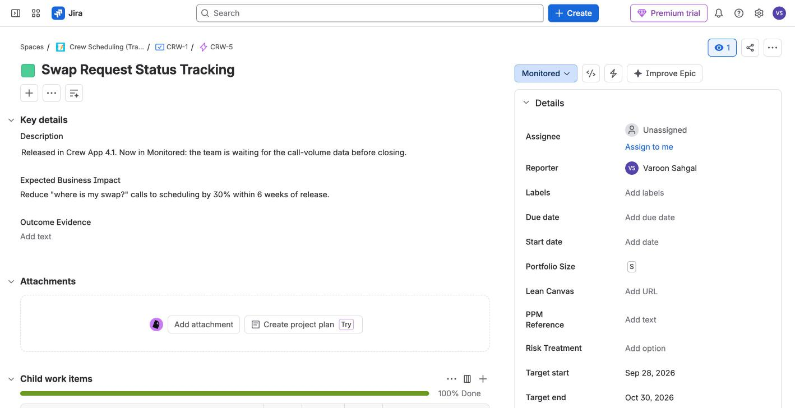

Module 1 of 8 · Session 1 · Connect outcomes to the forecast
Trace portfolio work and business outcomes
Delivered is not the same as done. Decide whether an Epic with every child finished has actually earned its place in the Done column.
35 min15 min practiceLab: Close the work or keep monitoring
Objective
Explain the decision and evidence needed at an Initiative or Epic stage.
Portfolio stages
Expected Business Impact
Lean Canvas link
PPM reference
Start date and target dates
Outcome Evidence
Portfolio T-shirt sizing
Team story estimates
Initiative permissions
ROAM risk treatment
Impediments
LeadershipRequest label
Why this module opens the courseThe release review later today asks one question: does the evidence support shipping? Before you look at forecasts, reports and tests, you need to know what the work was for. Every Epic in the Crew portfolio states an expected business impact. That statement is the yardstick for every later decision, including whether finished work is really finished.
M1.1 Portfolio stages are decisions, not progress bars
Initiatives and Epics in the Crew space follow the Crew Portfolio Workflow. Each status records a decision someone made, and each move needs evidence that the decision was sound. A delivery team's workflow asks "is the work done?". A portfolio workflow asks "was the work worth doing, and did it pay off?".
New Idea→Discovery→Technical Analysis→Prioritized→Developing→Monitored→Done|Canceled
The outline calls the fourth stage "Ready/Prioritized". The Crew example template uses Prioritized, and that's the name you'll see on the board. If your own team's template differs, the template owner decides which name wins.
Stage
Decision this stage records
Evidence to move on
Crew example
New Idea
Is this worth spending discovery time on?
A problem statement, a requester, a first Portfolio Size and a draft Expected Business Impact.
CRW-10 Swap Chat Assistant: XL, no parent, no business impact stated. It can't move on yet.
Discovery
Is the problem real and valuable?
A Lean Canvas link, user evidence and a measurable Expected Business Impact.
The Crew Portfolio board (board 64). Notice that Monitored holds exactly one Epic, CRW-5, and Done is empty. LeadershipRequest labels show on CRW-11, CRW-1 and CRW-3.
Golden Template diagnosis: the vanishing EpicWhen this board was first built, CRW-5 didn't appear at all. Kanban boards get a default sub-filter, fixVersion in unreleasedVersions() OR fixVersion is EMPTY, which hides anything in a released version. CRW-5 shipped in Crew App 4.1, so the board hid exactly the Epic that most needed watching. The sub-filter was cleared. When a portfolio item is "missing", check the board filter and the sub-filter before you assume the data is wrong.
project = CRW AND issuetype in (Initiative, Epic) ORDER BY Rank ASC
M1.2 Trace an Initiative and size it at the right level
The Crew hierarchy is Initiative → Epic → Story, Task, Bug, Spike, Risk, Impediment or Improvement → Sub-task. Tracing means following the parent links in both directions: up to the business case, down to the delivered work.
CRW-1 Crew Self-Service 2027 is the Initiative behind everything in this course. It's in Developing, sized XL, labelled LeadershipRequest, and links to a Lean Canvas and PPM reference PPM-2027-014. Its Expected Business Impact is the promise the release review will be judged against: "40% fewer scheduler-handled swap requests, swap turnaround from 2 days to under 2 hours by Q2 2027."
…atlassian.net/browse/CRW-1

CRW-1. Notice three things. The child Epics sit in different stages, from Prioritized (CRW-6) to Canceled (CRW-9). The child progress bar reads only 16% Done. And the Initiative's own Outcome Evidence is still empty, which is fine while it's in Developing.
Two queries, two different answers
parent = CRW-1 returns only the direct children, which here are the Epics. With Premium, portfolioChildIssuesOf() walks the whole tree below an Initiative: Epics and the work under them. Filter it by work type to get the level you want.
issue in portfolioChildIssuesOf("CRW-1") AND issuetype = Epic
The verified answer is six Epics: CRW-3, CRW-4, CRW-5, CRW-6, CRW-9 and CRW-11. CRW-9 is Canceled, so a "how many Epics are left?" question needs a status clause too. Remove the issuetype clause and you'll also get the Stories and Bugs under those Epics. That's the query to use when you trace delivered work back to the Initiative it serves.
parent = CRW-1 ORDER BY status ASC
Portfolio T-shirt sizes and team story points answer different questions
The portfolio fields Portfolio Size (XS, S, M, L, XL), Expected Business Impact, Outcome Evidence, Lean Canvas and PPM Reference live on Initiatives and Epics only. Story Points live on team work. They aren't two scales for the same thing.
Portfolio Size
Made early, by the people who fund and sequence work, before anyone has split it into stories. It compares one Epic with another: is CRW-10 (XL) a bigger bet than CRW-11 (S)? It supports funding, sequencing and intake decisions.
Story Points
Made late, by the team that will build the work, on refined stories. Summed and compared with velocity, they support sprint commitment and delivery forecasts, such as the Plans capacity bars in Module 2.
CRW-5 is a useful calibration point. It was sized S, and its four Stories (CRW-12 to CRW-15) carried 5 + 3 + 5 + 8 = 21 points, delivered in one sprint, SWP-2026.q4.1. That doesn't mean "S = 21 points". Another team, another quarter, another S would differ. It means you can look back and ask whether the S size was a sensible bet. Keep the two scales separate, and don't publish a conversion table. Once a conversion exists, people start treating T-shirt sizes as commitments.
Initiative permissionsWho may create Initiatives, edit their portfolio fields or move them between stages is a governance decision. The template owner and the portfolio owner make it, not each team. In this course CRW is read-only for everyone except the instructor, so you'll inspect the portfolio but not change it. In your own space, check who holds that permission before a stage review. "Anyone can move it to Done" is how CRW-5 could have closed with no evidence at all.
Which estimate supports this decision?
Pick the estimate that should drive each decision. Read the explanation after each answer.
The portfolio group must choose between funding CRW-10 Swap Chat Assistant or CRW-11 Swap Analytics for Leadership next half.
Neither Epic has refined stories yet. A relative T-shirt size (XL vs S) plus the stated business impact is the right level for an intake decision. Note that CRW-10 has no business impact stated, which matters as much as its size.
Swap Squad decides how much to commit to SWP-2026.q4.5.
Sprint commitment uses the team's own estimates against its demonstrated velocity (average 18.33 completed) and planned capacity. Portfolio sizes are far too coarse for a two-week decision.
The portfolio owner asks whether "S" Epics tend to turn out bigger than expected.
This is calibration. You compare the original size with what was delivered (CRW-5: S, 21 points in one sprint) across several Epics. You learn whether sizing is biased. You don't convert one scale into the other.
The plan shows Crew App 4.2 at risk and leadership wants to know how much work is left on CRW-3.
"How much is left" is a delivery forecast: remaining estimated stories against capacity. Also say what isn't estimated yet. Unestimated work (CRW-34 is a High Bug with no estimate) makes any point total an underestimate.
M1.3 Monitored: the stage most teams skip
Monitored exists because shipping isn't the goal. The goal is the effect described in Expected Business Impact. An Epic sits in Monitored after its work is released and before anyone has measured whether the effect happened. Teams skip it because the board looks tidier when delivered Epics jump straight to Done. Then nobody ever finds out whether the work paid off.
…atlassian.net/browse/CRW-5

CRW-5 under parent CRW-1. Read it like an auditor. The description says the team is "waiting for the call-volume data before closing". Outcome Evidence is empty. Children are 100% Done. And the Assignee is Unassigned, so nobody is named to collect the data.
Read the dates, not just the fields
CRW-5's expected impact sets its own measurement window: "Reduce 'where is my swap?' calls to scheduling by 30% within 6 weeks of release." Work out where that window sits:
30 Oct 2026Crew App 4.1 released (CRW-5's target end)
22 Nov 2026Today: just over three weeks into the window
11 Dec 2026Six weeks after release: the window closes
Not setWho measures, from what source, against what baseline
So the honest answer today isn't "close it" and isn't "it's late". The window is still open. The problem is that nothing in Jira says who will produce the evidence, from which source, or compared with what. If nobody fixes that, CRW-5 will still be in Monitored in February.
What counts as outcome evidence
Evidence
A baseline: swap-status calls to scheduling for a comparable period before 30 Oct.
The measured value for the six weeks after release, and the percentage change against the 30% target.
The source (for example the scheduling contact log) and a link to the extract.
Who measured it and when, plus any caveat such as a holiday-season effect.
Not evidence
"All child items are Done." That's a delivery fact, not an outcome.
"Crew App 4.1 shipped on time."
"Schedulers say it feels quieter." An anecdote is a starting point, not a measurement.
A number with no source, period or baseline.
Done doesn't mean "target hit"An Epic can close as Done when the outcome is measured and recorded, even if it missed the 30% target. The Outcome Evidence then says so, and the follow-up decision (new Epic, accept the result, or stop) is recorded. Closing an Epic without measuring is the failure. Missing a target and saying so is learning.
project = CRW AND issuetype = Epic AND status = Monitored AND "Outcome Evidence" is EMPTY
parent = CRW-5 AND statusCategory = Done
Stage-gate inspector: close it or keep monitoring?
Interactive
Tick only what you can observe in Jira, not what you assume. Start with Load CRW-5 as it is today, then change one box at a time and watch the recommendation move.
Recommended stage
Tick what you observe
This sends the stage and the missing-evidence list to the evidence card in the lab below. Edit the text there in your own words.
M1.4 Risks, impediments and the leadership view
A Risk is something that might hurt the outcome. An Impediment is something that is blocking work right now. They need different handling, and mixing them up is how a real blocker hides in a risk register for three weeks.
Risk treatment: ROAM
Every Crew Risk carries a Risk Treatment value. Each value is a claim, and each claim needs its own evidence:
A named owner, a plan and a review date. CRW-69 is High, labelled LeadershipRequest and relates to Spike CRW-44 (vendor API latency under peak load). The spike's result is the evidence the owner needs.
Proof that the mitigation works, not just that it was planned. You'll meet this one again in Module 4, where a test is supposed to provide that proof.
project = CRW AND issuetype = Risk ORDER BY key ASC
An impediment, escalated properly
CRW-46Rules vendor sandbox credentials not issued is an Impediment, not a Risk. It's Highest priority, flagged, labelled escalated, was escalated to Vendor Management on 18 November, and the credentials are needed by 25 November. It blocks CRW-25, the trip-board swap Story in the active sprint. That's a complete escalation record: what's blocked, who it went to, when, and the date after which the plan breaks. Use it as your template whenever you escalate.
project = CRW AND (Flagged is not EMPTY OR issueLinkType = "is blocked by") AND statusCategory != Done
The leadership view runs on a label
The approved leadership view in the Crew example is a filter on the practice label LeadershipRequest. Four items carry it today: the Initiative CRW-1, the Epics CRW-3 and CRW-11, and the Risk CRW-69. A Risk appears in that view only if someone deliberately labels it, which is a decision about what leadership needs to see.
project = CRW AND labels = LeadershipRequest ORDER BY issuetype DESC, key ASC
Labels are fragile by designA label is free text. LeadershipRequests or Leadership-Request creates a new label that this filter won't match, so the item silently disappears from leadership's view. Two habits help. Choose the label from the suggestion list rather than typing it. And keep the project = CRW clause, so practice labels added in other spaces don't leak into the view.
ROAM sorter: what is each item, and how is it treated?
Read each record as you'd find it in CRW and choose its treatment, or say it isn't a risk at all.
CRW-69 Rules vendor API rate limits during holiday peak. High priority, in Development, a named owner is tracking it, related to Spike CRW-44.
Owned. Someone has taken responsibility and work is under way (the CRW-44 spike measures latency under peak load). It stays Owned until the spike's evidence lets the owner resolve, mitigate or accept it.
CRW-70 Union review of the self-service swap policy. The team can't speed it up and has decided to proceed while the review runs.
Accepted. The impact is understood and someone with authority has agreed to carry it. The record should name who accepted it and what would reopen it, such as the review asking for policy changes.
CRW-71 Crew personal data in SMS notifications. Message templates were changed to reduce what an SMS reveals.
Mitigated: action taken to reduce likelihood or impact. A mitigation claim is only as good as the test that proves it. In Module 4 you'll check whether any test actually covers it.
CRW-72 Nightly roster sync delays swap visibility. The underlying sync problem was fixed and the item is Done.
Resolved: the risk no longer exists. Record what closed it so nobody reopens the same discussion next quarter.
CRW-46 Rules vendor sandbox credentials not issued. Highest priority, flagged, blocks CRW-25, needed by 25 November.
Not a risk. It's already happening and already blocking work, so it's an Impediment with an escalation (Vendor Management, 18 Nov) and a needed-by date. ROAM values don't apply to it.
Instructor demo · 10 min
Open the Crew Portfolio board ↗. Walk the columns left to right and say the decision each stage records. Point out that Done is empty and Monitored holds only CRW-5.
Open CRW-1 ↗. Read the Expected Business Impact aloud. Show the Lean Canvas link, PPM-2027-014 and Portfolio Size XL. Show the child Epics at different stages and the 16% Done bar.
Run issue in portfolioChildIssuesOf("CRW-1") AND issuetype = Epic (6 Epics), then parent = CRW-1. Explain when you'd use each.
Follow the benefit down: open CRW-5 ↗. Expected impact, Outcome Evidence empty, children 100% Done, Assignee Unassigned. Ask the room: "Close it?" Take two answers, then work out the six-week window together (30 Oct → 11 Dec).
Contrast with CRW-9 ↗, which is Canceled with its reason in Outcome Evidence. Evidence applies to stopping work too.
Show the Impediment: open CRW-46 ↗ (flag, escalated label, needed by 25 Nov), then its link to CRW-25.
Leadership view: run project = CRW AND labels = LeadershipRequest (4 results). Show that Risk CRW-69 is in it. Then, on an instructor practice item in CRP, add the label LeadershipRequest and show that a filter without the project clause picks it up. Remove the label again.
LAB M1 · 15 MIN · CRW READ-ONLY · YOUR SEAT
Close the work or keep monitoring
Turbulence
Brief The portfolio owner wants the Monitored column cleared before the release review. "CRW-5 is 100% done, just close it." Your job is to decide whether CRW-5 has earned Done and to justify the call with evidence. CRW is read-only: inspect, search and report, but never edit, transition, comment or label anything there. The only write in this lab is an optional comment on your own seat epic in CRP (summary prefix L{SEAT} · ).
Inspect the Epic. Open CRW-5 ↗ and note its status, Expected Business Impact, Outcome Evidence, Portfolio Size, target end, Assignee and child progress. Run the two checks below. You should get 1 and 4.
project = CRW AND issuetype = Epic AND status = Monitored AND "Outcome Evidence" is EMPTY
parent = CRW-5 AND statusCategory = Done
Place it in the measurement window. CRW-5 shipped in Crew App 4.1 on 30 October. Work out when the six-week window closes and where today (22 November) sits in it. Then use the stage-gate inspector: load CRW-5, check that each box matches what you actually saw, and read the recommendation.
List the missing evidence. Write down exactly what Outcome Evidence must contain before Done is justified: baseline, measured value, source, period, who measured it. Be specific to "where is my swap?" calls.
Name ownership and risk. Who should own the measurement, given that the Assignee is empty? What happens if no call-volume data exists by the review date? Decide whether that's a Risk to raise (and with which ROAM treatment), and who you'd escalate to. Use CRW-46's escalation record as your model.
Explain the sizing. In two sentences, explain how CRW-5's Portfolio Size (S) and its Stories' points (21) each supported a different decision, and why you wouldn't convert one into the other.
Record it. Fill in the evidence card below. Optionally, add your stage call as a comment on your seat epic () ↗, starting with L{SEAT} · M1 decision on CRW-5:. Comment only on your own seat epic.
project = CRP AND issuetype = Epic AND summary ~ "L{SEAT}" AND updated >= -1d
Debrief: what a strong answer looks like
Stage: keep CRW-5 in Monitored. Delivery is finished (4 of 4 children Done, released 30 Oct), so it doesn't go back to Developing. It hasn't earned Done, because the measurement window runs to 11 December 2026 and Outcome Evidence is empty. Closing it now would record a delivery fact as if it were an outcome.
Evidence still needed: the swap-status call volume to scheduling for a comparable pre-release period (baseline); the same measure for 30 Oct – 11 Dec; the percentage change against the 30% target; the source system and extract link; who measured and when; caveats (holiday season, the Crew App 4.2 release on 18 Dec if the measurement runs late).
Ownership and risk: the Assignee is empty, so name a measurement owner, normally the Product Owner of the Swap Squad work, with a review date shortly after 11 Dec. If the call-volume source isn't confirmed, raise a Risk ("outcome for CRW-5 can't be measured"), treatment Owned by that person. Escalate to the portfolio owner if there's still no data by the review date. If the data shows the outcome no longer matters, the honest move is Done with the result recorded, or Canceled with the reason, as CRW-9 did.
Sizing: "S" was an early, relative bet that helped the portfolio fund and sequence CRW-5 against other Epics. The 21 points were the team's estimates, used to commit work to SWP-2026.q4.1. Comparing the two afterwards calibrates future sizing. Converting them would turn a funding guess into a delivery promise.
Learner output · Module 1
A justified portfolio stage and a short list of outcome evidence, risk treatment and ownership still needed.
+400 mi
Checkpoint
1. CRW-5's children are all Done and Crew App 4.1 shipped on 30 October. Outcome Evidence is empty and the impact is measured "within 6 weeks of release". On 22 November, what's the right call?
Delivery is complete, so it doesn't belong in Developing. Done needs measured outcome evidence, and the window is still open. Canceled means you stopped the work deliberately, which isn't the case. The gap to fix today is ownership: nobody is assigned to produce the evidence.
2. You need every Epic under Initiative CRW-1, whatever its stage. Which statement is accurate?
parent = stops at direct children. portfolioChildIssuesOf() needs Premium (Plans) and walks the whole tree, so you filter it by work type to get the level you want. Here that's CRW-3, 4, 5, 6, 9 and 11.
3. Risk CRW-70 (union review) is marked Accepted. What should the record contain for that treatment to be credible?
Accepted means someone with authority has chosen to carry the impact. Without a named decision maker and a revisit trigger, "Accepted" is just "ignored". A Story that removes the risk would make it Mitigated or Resolved.
4. A sponsor asks you to publish "S = 20 points, M = 40 points" so the portfolio can be forecast in points. What's the best response?
One data point isn't a scale, and points depend on the team that estimated them. A conversion table turns an early funding guess into a delivery commitment. Calibration (was S a good bet?) is the useful comparison.
5. An Epic is labelled LeadershipRequests and doesn't appear in the leadership view. Why?
Labels are free text. A near-miss spelling creates a new label, and the filter silently misses the item. Pick labels from the suggestion list, and check the leadership query's count when it matters.